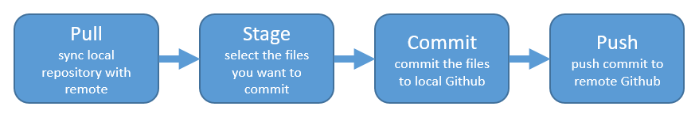

Cookbook Setup
Overview
This is the setup required to contribute to our Cookbook. It is presented in a recommended order, although the setup will depend on what workflow you already have, because there are different ways you can start working and contributing. You will need a GitHub account. You will be able to incorporate this setup into a local workflow (with Jupyter Lab, VS Code, RStudio, etc), and as you develop tutorials on the Cloud, you will need to get setup with our 2i2c JupyterHub.
This chapter describes initial setup, with workflows described in more detail in the next chapter.
Create a GitHub Account
- GitHub: https://github.com
- Follow optional advice on choosing your username
GitHub Clinic
Our GitHub Clinic introduces GitHub with the motivation of collaboration and open science. It is designed for both new and seasoned learners, focused on how develop workflows with diverse teams. It provides a foundation of skills for how we work, learn, and teach together.
- GitHub Clinic (slides)
Video recordings
Part 1: Publishing (video), recorded as 19 minutes of lesson, cut for participants hands-on in breakout rooms, and 5 minutes of followup lesson.
Part 2: Project Management (video), recorded as 9 minutes of lesson, cut for participants hands-on in breakout rooms, and 5 minutes of followup lesson.
Part 3: 2i2c JupyterHub (video) introduces a beginning GitHub workflow from our 2i2c JupyterHub. It is recorded as 9 minutes of lesson.
Access JupyterHub
Our Openscapes 2i2c JupyterHub is available for Mentors and their colleagues to develop, test, and teach. Using the JupyterHub is described in the tutorials (link upcoming as that is tidied).
To request access, fill out this JupyterHub request form. You’ll need a GitHub username (internal).
Clone Cookbook from GitHub
Now clone our Cookbook and set the cloned repository as your current directory.
git clone https://github.com/NASA-Openscapes/earthdata-cloud-cookbook
cd earthdata-cloud-cookbook#| eval: false
git clone https://github.com/NASA-Openscapes/earthdata-cloud-cookbook
cd earthdata-cloud-cookbookConfigure GitHub, with PAT
To configure your GitHub account in the 2i2c JupyterHub, follow these 2021 Cloud Hackathon instructions: setup PAT. These instructions are to setup your Hub’s PAT through Jupyter and will also set up credentials for RStudio users. However for RStudio-specific instructions (not specific to our 2i2c Hub) please also see Happy Git with R.
Sync from 2i2c (local) to GitHub (remote)
Ensure you can sync and practice the GitHub workflow. Here, “local” means the 2i2c Hub, but could also mean your local desktop software for Jupyter, VS Code, RStudio, etc.
Syncing to GitHub.com means 4 steps:
- Pull
- Stage
- Commit
- Push

Review the 2021 Cloud Hackathon instructions for step-by-step screenshots for syncing. RStudio users can follow R for Excel Users instructions.
Build Cookbook!
We use Quarto to build (“serve”) our Cookbook and publish it via GitHub. In the Terminal, your current directory should already be the cookbook (cd earthdata-cloud-cookbook). Type the following, which will open the Cookbook as a new tab in your browser:
quarto serveBackground: Quarto is a new open-source scientific and technical publishing system. It makes collaborating to create technical documentation streamlined because we work in plain text documents that can have executable code (Python, R) and are rendered using Jupyter and Knitr engines. Explore Quarto and use it hands-on in our separate Quarto Website Tutorial. Quarto is already installed in our JupyterHub.
Now you’re all set to contribute to the Cookbook! Read about how in the next chapter.